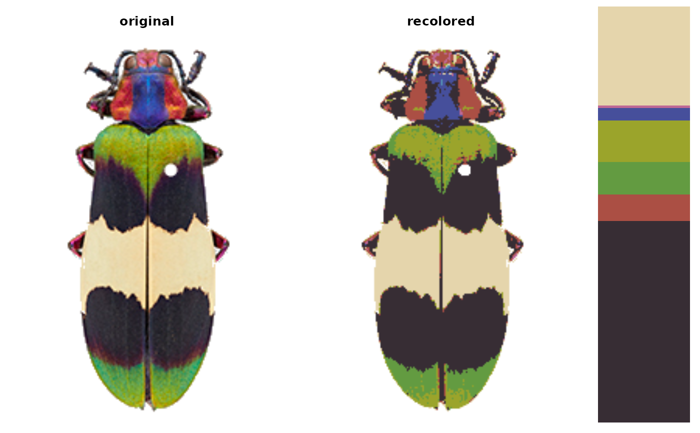

Color mapping (as with k-means or binning) often requires over-clustering in order to recover details in an image. This can result in larger areas of relatively uniform color being split into multiple colors, or in regions with greater variation (due to lighting, shape, reflection, etc) being split into multiple colors. This function clusters the color centers by visual similarity (in CIE Lab space), then returns the re-clustered object. Users can either set a similarity cutoff or a final number of colors. See examples.
Usage
recluster(
recolorize_obj,
dist_method = "euclidean",
hclust_method = "complete",
channels = 1:3,
color_space = "Lab",
ref_white = "D65",
cutoff = 60,
n_final = NULL,
plot_hclust = TRUE,
refit_method = c("imposeColors", "mergeLayers"),
resid = FALSE,
plot_final = TRUE,
color_space_fit = "sRGB"
)Arguments
- recolorize_obj
A recolorize object from
recolorize(),recluster(), orimposeColors().- dist_method
Method passed to stats::dist for calculating distances between colors. One of "euclidean", "maximum", "manhattan", "canberra", "binary" or "minkowski".
- hclust_method
Method passed to stats::hclust for clustering colors by similarity. One of "ward.D", "ward.D2", "single", "complete", "average" (= UPGMA), "mcquitty" (= WPGMA), "median" (= WPGMC) or "centroid" (= UPGMC).
- channels
Numeric: which color channels to use for clustering. Probably some combination of 1, 2, and 3, e.g., to consider only luminance and blue-yellow (b-channel) distance in CIE Lab space, channels = c(1, 3) (L and b).
- color_space
Color space in which to cluster centers, passed to
[grDevices]{convertColor}. One of "sRGB", "Lab", or "Luv". Default is "Lab", a perceptually uniform (for humans) color space.- ref_white
Reference white for converting to different color spaces. D65 (the default) corresponds to standard daylight.
- cutoff
Numeric similarity cutoff for grouping color centers together. The range and value will depend on the chosen color space (see below), but the default is in absolute Euclidean distance in CIE Lab space, which means it is greater than 0-100, but cutoff values between 20 and 80 will usually work best. See details.
- n_final
Final number of desired colors; alternative to specifying a similarity cutoff. Overrides
cutoffif provided.- plot_hclust
Logical. Plot the hierarchical clustering tree for color similarity? Helpful for troubleshooting a cutoff.
- refit_method
Method for refitting the image with the new color centers. One of either "imposeColors" or "mergeLayers".
imposeColors()refits the original image using the new colors (slow but often better results).mergeLayers()merges the layers of the existing recolored image. This is faster since it doesn't require a new fit, but can produce messier results.- resid
Logical. Get final color fit residuals with
colorResiduals()?- plot_final
Logical. Plot the final color fit?
- color_space_fit
Passed to
imposeColors(). What color space should the image be reclustered in?
Details
This function is fairly straightforward: the RGB color centers of the
recolorize object are converted to CIE Lab color space (which is
approximately perceptually uniform for human vision), clustered using
stats::hclust(), then grouped using stats::cutree().
The resulting groups are then passed as the assigned color centers to
imposeColors(), which re-fits the original image using the new
centers.
The similarity cutoff does not require the user to specify the final number
of colors, unlike k-means or n_final, meaning that the same cutoff could be
used for multiple images (with different numbers of colors) and produce
relatively good fits. Because the cutoff is in absolute Euclidean distance in
CIE Lab space for sRGB colors, the possible range of distances (and therefore
cutoffs) is from 0 to >200. The higher the cutoff, the more dissimilar colors
will be grouped together. There is no universally recommended cutoff; the
same degree of color variation due to lighting in one image might be
biologically relevant in another.
Examples
# get an image
corbetti <- system.file("extdata/corbetti.png", package = "recolorize")
# too many color centers
recolored_corbetti <- recolorize(corbetti, bins = 2)
#>
#> Using 2^3 = 8 total bins

# just enough!
# check previous plot for clustering cutoff
recluster_obj <- recluster(recolored_corbetti,
cutoff = 45,
plot_hclust = TRUE,
refit_method = "impose")

 # we get the same result by specifying n_final = 5
recluster_obj <- recluster(recolored_corbetti,
n_final = 5,
plot_hclust = TRUE)
# we get the same result by specifying n_final = 5
recluster_obj <- recluster(recolored_corbetti,
n_final = 5,
plot_hclust = TRUE)